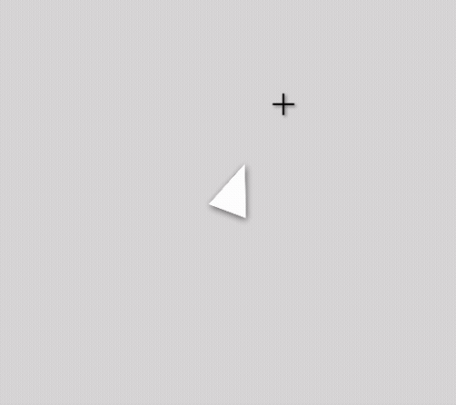
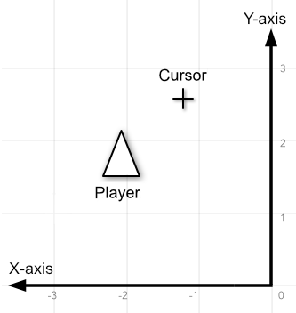
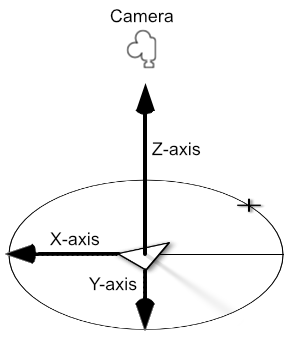
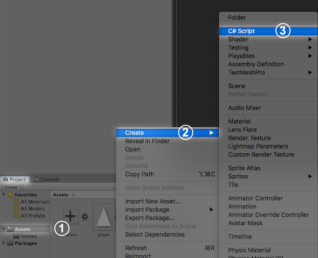
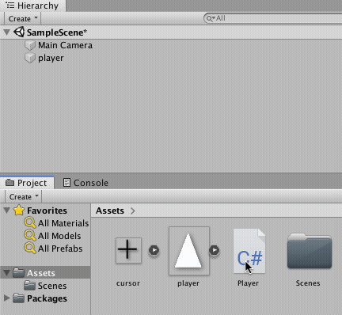
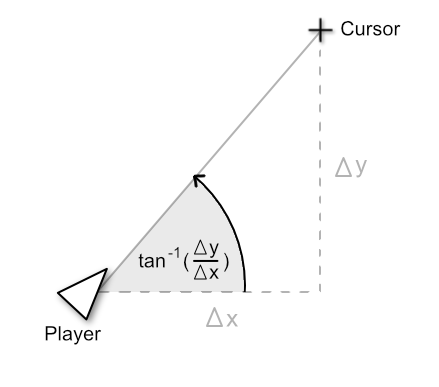
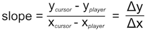
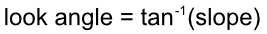

Mouselook in a 2D top-down game in Unity

Mouselook, or free look, is a mechanic used in games which lets the player rotate a character based on mouse movement. This article explains how to write a mouselook C# script within the Unity game engine for a top-down 2D game.
Knowledge prerequisites: C#, basic trigonometry, creating Unity game objects.
Overview
There are 2 common methods to implement mouselook in games:
- The cursor remains locked at the center of the screen and the mouse's change in position rotates the character.
- The cursor moves freely along the screen and the character looks towards the cursor's location.
Most 2D games use the second mouselook method. In 2D space, rotating an object towards a target requires 3 pieces of information:
- The coordinates of the object.
- The coordinates of the target.
- The rotation of the object towards the target.
In 2D Unity games, the coordinates of objects exist along a grid formed by the X and the Y axes, shown in the diagram below:

The player rotates along the Z-axis parallel to the camera, shown in the diagram below:

This article explains how to rotate the player along the Z-axis so that it faces the mouse cursor with the following steps:
- Attach a C# script to the player.
- Get the cursor's coordinates.
- Get the player's coordinates.
- Calculate the player's angle towards the cursor.
- Rotate the player.
1. Attach a C# script to your player object.
To control your player object, you need to attach a script to it.
Under the Project tab, right-click on the Assets folder and select Create > C# Script.

Name the script Player. Then drag Player onto the name of the player object within the hierarchy panel to attach it.

Double-click on Player to view the script.
Note: To set the script editor in Unity 2018.3.11, navigate to Unity > Preferences > External Tools > External Script Editor and select Browse to set the script editor to your IDE of choice.
When you open Player, you will see that Unity automatically generates a public class "Player" with the Start() and Update() functions:
using System.Collections;
using System.Collections.Generic;
using UnityEngine;
public class Player : MonoBehaviour
{
// Start is called before the first frame update
void Start()
{
}
// Update is called once per frame
void Update()
{
}
} Delete the Start() function since you will not be using it in this example.
Update() and FixedUpdate()
The Update() and FixedUpdate()functions continuously update the state of the game. They can be called within the same script, but they have the following differences:
Update():- Used for executing code not related to in-game physics.
- Called once per frame.
FixedUpdate():- Used for executing code that requires calculating in-game physics.
- Called multiple times per frame.
In this example, you are only using the Update() method since you are not applying any physical forces.
2. Get the coordinates of the player
Define Vector2 playerLoc and Vector2 cursorLoc to store the coordinates of the player and the cursor:
public class Player : MonoBehaviour
{
float lookAngle;
Vector2 playerLoc;
Vector2 cursorLoc;
...In the Update() function, set playerLoc to the current location of the player with transform.position:
// Update()
playerLoc = transform.position;3. Get the coordinates of the cursor
The Input.mousePosition property returns the cursor's X and Y coordinates relative to its location on your screen. However, you need the cursor's location relative to the in-game world. The Camera.main.ScreenToWorldPoint() method converts the coordinates of the cursor on your screen to in-game world coordinates.
Convert the value of Input.mousePosition to in-game world coordinates by using the Camera.main.ScreenToWorldPoint() method. Assign its value to cursorLoc:
// Update()
playerLoc = transform.position;
cursorLoc = Camera.main.ScreenToWorldPoint(Input.mousePosition); 4. Find the player's angle towards the cursor
In the Player script, define the float variable lookAngle to represent the angle that the player needs to rotate to look at the cursor:
public class Player : MonoBehaviour
{
float lookAngle;
...To find lookAngle's value, you need the arctangent of the slope of the line between the player and the cursor, shown in the diagram below:

The slope is the difference between the Y-coordinates divided by the difference between the X-coordinates of playerLoc and cursorLoc:

The angle that the player needs to rotate to look at the cursor can be found by calculating the arctangent of the slope:

Define the float variables dx and dy to represent the X and Y values of the slope:
public class Player : MonoBehaviour
{
Vector2 playerLoc;
Vector2 cursorLoc;
float slope;
float dx;
float dy;
...In the Update() function, set dx and dy as the differences between playerLoc and cursorLoc by using the .x and .y properties of these objects:
// Update()
...
dx = cursorLoc.x - playerLoc.x;
dy = cursorLoc.y - playerLoc.y;Be sure to subtract the starting location playerLoc from the target location cursorLoc.
The Mathf.Atan2() takes the the Y and X values of the slope and returns the arctangent of the slope. This method automatically avoids division by zero.
Assign the value of Mathf.Atan2(dy, dx) to lookAngle:
// Update()
...
lookAngle = Mathf.Atan2(dy, dx);The Mathf.Atan2() method returns the angle in radians. Multiply its value by Mathf.Rad2Deg to convert it to degrees:
// Update ()
...
lookAngle = Mathf.Atan2(dy, dx) * Mathf.Rad2Deg; 5. Rotate the player
For 3D games, Quaternions are recommended for calculating rotations along multiple axes. For 2D games, Euler angles (angles in degrees or radians) are sufficient because objects only rotate along 1 axis.
You can rotate an object in Unity in 2 ways:
- Applying a physical force to the object that accumulates over time.
- Setting the object's rotation directly every frame.
You want to set the rotation of the player directly every frame. Since there are no physical forces being applied, the player's rotation should be set within the Update() function.
To set the player's rotation every frame, you need 2 variables:
- The angle that the player is rotated in the current frame =
lookAngle. - The player's axis of rotation = Z-axis.
The transform component provides access to the transform properties of the object attached to your script. In the Update() function, use transform.rotation to modify the player's rotation:
// Update()
...
transform.rotation = // value of rotationThe Quaternion.Euler() method takes 3 angles along the X, Y, and Z axes and returns a single rotation. In this example, set the X and Y values to 0 and the Z value to lookAngle:
// Update()
...
transform.rotation = Quaternion.Euler(0, 0, lookAngle);Correct the sprite direction
In this example, the original sprite image is facing upwards, which offsets its rotation by 90º.
Subtract 90º from lookAngle within the Quaternion.Euler() method to adjust the sprite's rotation:
// Update()
...
transform.rotation = Quaternion.Euler(0, 0, lookAngle - 90);Now if you play the game, the player should look towards the position of the cursor. This example can also be applied to making a character face towards any target object by replacing the cursor's coordinates with the target's coordinates.
Full Code
using System.Collections;
using System.Collections.Generic;
using UnityEngine;
public class Player : MonoBehaviour
{
float lookAngle;
Vector2 playerLoc;
Vector2 cursorLoc;
float dx;
float dy;
void Update()
{
playerLoc = transform.position;
cursorLoc = Camera.main.ScreenToWorldPoint(Input.mousePosition);
dx = cursorLoc.x - playerLoc.x;
dy = cursorLoc.y - playerLoc.y;
float lookAngle = Mathf.Atan2(dy,dx) * Mathf.Rad2Deg;
transform.rotation = Quaternion.Euler(0,0,lookAngle - 90);
}
}